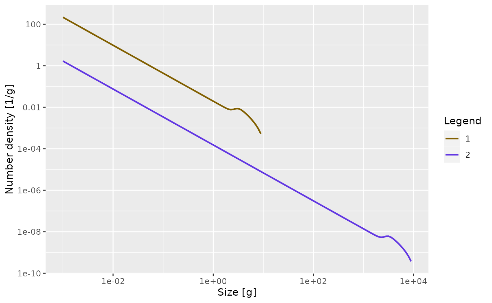

On this page we present the details of the mizer model, taking care to separate the essential features of the model that are hard-coded and the various possible specialisations for which mizer provides setup functions. We will provide links to the functions that can be used to set or change the various model parameters (all collected together in setParams()) as well as to the functions that calculate the various ecological rates in the model (all collected together in mizerRates()) because the help pages of these functions will provide useful additional details.
The model assumes that, to a first approximation, an individual can be characterized by its weight \(w\) and its species number \(i\) only. The aim of the model is to calculate the size spectrum \(N_i(w)\), which is the density of individuals of species \(i\) such that \(\int_w^{w+dw}N_i(w)dw\) is the number of individuals of species \(i\) in the size interval \([w,w+dw]\). In other words: the number of individuals in a size range is the area under the number density \(N_i(w)\).
Here is a plot of an example size spectrum for two species with \(N_i(w)\) on the vertical axis for \(i=1,2\) and \(w\) on the horizontal axis.
library(mizer) params <- newTraitParams(no_sp = 2, min_w = 1e-3) plotSpectra(params, resource = FALSE, power = 0)

To represent this continuous size spectrum in the computer, the size variable \(w\) is discretized into a vector w of discrete weights, providing a grid of sizes spanning the range from the smallest egg size to the largest asymptotic size. These grid values divide the full size range into a finite number of size bins. The size bins should be chosen small enough to avoid the discretisation errors from becoming too big. You can fetch this vector with w() and the vector of bin sizes with dw().
The weight grid is set up to be logarithmically spaced, so that w[j]=w[1]*exp(j*dx) for some fixed dx. This grid is set up automatically when creating a MizerParams object.
In the code the size spectrum is stored as an array N such that N[i, a] holds the density \(N_i(w_a)\) at weights \(w_a=\)w[a], or, if time dependence is included, an array such that N[i, a, u] holds \(N_i(w_a,t_u)\). See N().
Note that, contrary to what one might have expected, N[i, a] is not the number of individuals in a size bin but the density at a grid point. The number of individuals in the size bin between w[a] and w[a+1]=w[a]+dw[a] is only approximately given as N[i, a]*dw[a], where dw[a]= w[a+1]-w[a].
A good way to think about the time evolution of the number density \(N_i(w)\) is to consider the familiar situation of traffic density on the roads. A fish’s life is a journey along the size axis from egg size to size at death. There are many other fish making the same journey. The speed with which the fish move along the size axis is their growth rate. This is quite analogous to the speed of traffic on a road. Just as the speed of cars depends on the density of other cars on the road, the growth rate of fish depends on the density of other fish. When the density of cars on a stretch of road is high, their speed decreases, and this leads to a pile-up and can lead to traffic jams. Similarly when the density of fish in a size interval is high, their growth rate goes down due to competition for the same food sources, and this too can lead to pile-ups and bottlenecks. So one just has to replace the space variable in a traffic model by size to get an equation for the fish size spectra.
The additional feature in the evolution of fish densities that is not present in road traffic density is that fish can die while they are growing up, and this death rate is also dependent on the density of other fish.
The time evolution of the number density \(N_i(w)\) is described by the McKendrick-von Foerster equation, which is a transport equation (as one would use for traffic density) but with an additional loss term due to fish mortality:
\[\begin{equation} \label{eq:MvF} \frac{\partial N_i(w)}{\partial t} + \frac{\partial g_i(w) N_i(w)}{\partial w} = -\mu_i(w) N_i(w), \end{equation}\]
where individual growth \(g_i(w)\) and mortality \(\mu_i(w)\) will be described below. There is no need for you to understand the mathematical notation used in this equation to understand its origin: it just says that the rate at which the number of fish in a size bracket changes is the rate at which fish grow into the size bracket from a smaller size minus the rate at which fish grow out of it to a larger size minus the rate at which the fish in the size bracket die. So to simulate the size spectrum dynamics we need to specify the growth rates and the mortality rates. This we will do below. The important point is that these rates depend on the density of other fish of other sizes, making the size-spectrum dynamics non-linear and non-local in very interesting ways. The resulting effects are too complicated to disentangle by pure thought. This is where simulations with the mizer package come in.
This McKendrick-von Foerster equation is approximated in mizer by a finite-difference method. This allows the project() function in mizer to project the size spectrum forwards in time: Given the spectrum at one time the project() function calculates it at a set of later times.
Of course there also needs to be reproduction into the smallest size class, otherwise there would be no small fish any more after a while. So for the smallest size class instead of a rate of growth into the size class there is a rate of reproduction of new individuals into that size class. This reproduction will be described further below.
Besides the fish spectrum there is also a resource spectrum \(NResource(w)\), representing for example the phytoplankton. This spectrum starts at a smaller size than the fish spectrum, in order to provide food also for the smallest individuals (larvae) of the fish spectrum. By default the time evolution of the resource spectrum is described by a semi-chemostat equation.
The semichemostat dynamics are given by \[\begin{equation}
\label{eq:nb}
\frac{\partial N_p(w,t)}{\partial t}
= r_p(w) \Big[ c_p (w) - N_p(w,t) \Big] - \mu_p(w) N_p(w,t).
\end{equation}\] Here \(r_p(w)\) is the resource regeneration rate and \(c_p(w)\) is the carrying capacity in the absence of predation. These parameters are changed with setResource(). By default mizer assumes allometric forms \[r_p(w)= r_p\, w^{n-1}.\] \[c_p(w)=\kappa\, w^{-\lambda}.\] You can retrieve these with getResourceRate() and getResourceCapacity() respectively. It is also possible to implement other resource dynamics, as described in the help page for setResource(). The mortality \(\mu_p(w)\) is due to predation by consumers and is described in the subsection Resource mortality.
Because the resource spectrum spans a different range of sizes these sizes are discretized into a different vector of weights w_full. The last entries of w_full have to coincide with the entries of w. The function w_full() gives the vector of sizes and dw_full() gives the vector of bin sizes.
The resource spectrum is then represented by a vector NResource such that NResource[c] =\(N_p(\)w_full[c]\()\).
Consumers can grow only by consuming prey. In the next few subsections we will build towards determining the growth rate resulting from predation. We will discuss how we model the predator-prey encounter rate, the resulting rate of consumption, the rate of loss due to metabolism, and the partitioning of the remaining energy into reproduction and growth.
The rate at which a predator of species \(i\) and weight \(w\) encounters food (mass per time) is determined by summing over all prey species and the resource spectrum and integrating over all prey sizes \(w_p\), weighted by the selectivity factors: \[\begin{equation}
\label{eq:1}
E_{i}(w) = \gamma_i(w) \int \left(\sum_{j} \theta_{ij} N_j(w_p) +
\theta_{ip} N_R(w_p) + \right)
\phi_i(w,w_p) w_p \, dw_p.
\end{equation}\] This is calculated by getEncounter(). The overall prefactor \(\gamma_i(w)\) sets the predation power of the predator. It could be interpreted as a search volume. It is set by setSearchVolume(). By default it is assumed to scale allometrically as \(\gamma_i(w) = \gamma_i\, w^q.\)
The \(\theta\) matrix sets the interaction strength between predators and the various prey species and resource. It is changed with setInteraction().
The size selectivity is encoded in the predation kernel \(\phi_i(w,w_p)\). This is changed with setPredKernel().
An important simplification occurs when the predation kernel \(\phi_i(w,w_p)\) depends on the size of the prey only through the predator/prey size ratio \(w_p/w\), \[\phi_i(w, w_p)=\tilde{\phi}_i(w/w_p).\] This is assumed by default but can be overruled. The default for the predation kernel is the truncated log-normal function \[ \label{eq:4} \tilde{\phi}_i(x) = \begin{cases} \exp \left[ \dfrac{-(\ln(x / \beta_i))^2}{2\sigma_i^2} \right] &\text{ if }x\in\left[0,\beta_i\exp(3\sigma_i)\right]\\ 0&\text{ otherwise,} \end{cases} \] where \(\beta_i\) is the preferred predator-prey mass ratio and \(\sigma_i\) sets the width of the predation kernel.
The integral in the expression for the encounter rate is approximated by a Riemann sum over all weight brackets: \[ {\tt encounter}[i,a] = {\tt search\_vol}[i,a]\sum_{k} \left( n_{pp}[k] + \sum_{j} \theta[i,j] n[j,k] \right) \phi_i\left(w[a],w[k]\right) w[k]\, dw[k]. \] In the case of a predation kernel that depends on \(w/w_p\) only, this becomes a convolution sum and can be evaluated efficiently via fast Fourier transform.
The encountered food is consumed subjected to a standard Holling functional response type II to represent satiation. This determines the feeding level \(f_i(w)\), which is a dimensionless number between 0 (no food) and 1 (fully satiated) so that \(1-f_i(w)\) is the proportion of the encountered food that is consumed. The feeding level is given by
\[\begin{equation} \label{eq:f} f_i(w) = \frac{E_{i}(w)}{E_{e.i}(w) + h_i(w)}, \end{equation}\]
where \(h_i(w)\) is the maximum consumption rate. This is changed with setMaxIntakeRate(). By default mizer assumes an allometric form \(h_i(w) = h_i\, w^n.\) The feeding level is calculated with the function getFeedingLevel().
The rate at which food is consumed is then \[\begin{equation} (1-f_i(w))E_{i}(w)=f_i(w)\, h_i(w). \end{equation}\]
Some of the consumed food is used to fuel the needs for metabolism and activity and movement, at a rate \({\tt metab}_i(w)\). By default this is made up out of standard metabolism, scaling with exponent \(p\), and loss due to activity and movement, scaling with exponent \(1\): \[{\tt metab}_i(w) = k_{s.i}\,w^p + k_i\,w.\] See the help page for setMetabolicRate().
The remaining rate, if any, is assimilated with an efficiency \(\alpha_i\) and is then available for growth and reproduction. So the rate at which energy becomes available for growth and reproduction is \[\begin{equation}
\label{eq:Er}
E_{r.i}(w) = \max(0, \alpha_i f_i(w)\, h_i(w) - {\tt metab}_i(w))
\end{equation}\] This is calculated with the getEReproAndGrowth() function.
A proportion \(\psi_i(w)\) of the energy available for growth and reproduction is used for reproduction. This proportion should change from zero below the weight \(w_{m.i}\) of maturation to one at the asymptotic weight \(w_{\infty.i}\), where all available energy is used for reproduction. This function is changed with setReproduction(). Mizer provides a default form for the function which you can however overrule.
What is left over after metabolism and reproduction is taken into account is invested in somatic growth. Thus the growth rate is \[\begin{equation}
\label{eq:growth}
g_i(w) = E_{r.i}(w)\left(1-\psi_i(w)\right).
\end{equation}\] It is calculated by the getEGrowth() function.
When food supply does not cover the requirements of metabolism and activity, growth and reproduction stops, i.e. there is no negative growth. The individual should then be subjected to a starvation mortality, but starvation mortality is not implemented in mizer at the moment.
The mortality rate of an individual \(\mu_i(w)\) has three sources: predation mortality \(\mu_{p.i}(w)\), background mortality \(\mu_{b.i}(w)\) and fishing mortality \(\mu_{f.i}(w)\).
Predation mortality is calculated such that all that is eaten translates into corresponding predation mortalities on the ingested prey individuals. Recalling that \(1-f_j(w)\) is the proportion of the food encountered by a predator of species \(j\) and weight \(w\) that is actually consumed, the rate at which all predators of species \(j\) consume prey of size \(w_p\) is \[\begin{equation}
\label{eq:pred_rated}
{\tt pred\_rate}_j(w_p) = \int \phi_j(w,w_p) (1-f_j(w))
\gamma_j(w) N_j(w) \, dw.
\end{equation}\] This predation rate is calculated by the function getPredRate().
The integral is approximated by a Riemann sum over all fish weight brackets. \[ {\tt pred\_rate}[j,c] = \sum_{a} {\tt pred_kernel}[j,a,c]\,(1-{\tt feeding_level}[j,a])\, \gamma[j,a]\,n[j,a]\,dw[a]. \]
The mortality rate due to predation is then obtained as \[\begin{equation}
\label{eq:mup}
\mu_{p.i}(w_p) = \sum_j {\tt pred\_rate}_j(w_p)\, \theta_{ji}.
\end{equation}\] This predation mortality rate is calculated by the function getPredMort().
External mortality \(z0_i(w)\) is independent of the abundances and is changed with setExtMort(). By default mizer assumes an allometric form \[z0_i(w) = z0_{pre} w_{\infty.i}^{1-n},\] where \(w_{\infty.i}\) is the asymptotic size of species \(i\).
The fishing parameters for the model are set up with setFishing(), where you can find the details of how to set up gears with different selectivities and the capabilities of different species. Fishing mortality \(\mu_{f.i}(w)\) is calculated with the function getFMort().
The total mortality rate \[\mu_i(w)=\mu_{p.i}(w)+z0_i(w)+\mu_{f.i}(w)\] is calculated with the function getMort().
The predation mortality rate on resource is given by a similar expression as the predation mortality on fish: \[\begin{equation}
\label{eq:mupp}
\mu_{p}(w_p) = \sum_j {\tt pred\_rate}_j(w_p)\, \theta_{jp}.
\end{equation}\] This is the only mortality on resource currently implemented in mizer. It is calculated with the function getResourceMort().
The total rate of investment into reproduction (grams/year) is found by integrating the contribution from all individuals of species \(i\), each of which invests a proportion \(\psi_i(w)\) of their consumption. This total rate of energy investment can then be converted to a total rate of egg production \(R_{p.i}\) (numbers per year): \[\begin{equation}
\label{eq:Rp}
R_{p.i} = \frac{\epsilon}{2 w_0} \int N_i(w) E_{r.i}(w) \psi_i(w) \, dw,
\end{equation}\] Here the total rate of investment is multiplied by an efficiency factor \(\epsilon\) and then dividing by the egg weight \(w_0\) to convert the energy into number of eggs. The result is multiplied by a factor \(1/2\) to take into account that only females reproduce. This rate of potential egg production is calculated with getRDI().
Three important density-dependent mechanisms widely assumed in fisheries models are automatically captured in the mizer model that lead to an emergent stock-recruitment relationship:
However there are other sources of density dependence that are not explicitly modelled mechanistically in mizer. An example would be a limited carrying capacity of suitable spawning grounds and other spatial effects.
This requires additional phenomenological density dependent contributions to the stock-recruitment. In mizer this type of density dependence is modelled through constraints on egg production and survival. The default functional form of this density dependence is represented by a reproduction rate \(R_i\) (numbers per time) that approaches a maximum as the energy invested in reproduction increases, modelled mathematically it is analogous to a Beverton-Holt type function:
\[\begin{equation}
\label{eq:R}
R_i = R_{\max.i} \frac{R_{p.i}}{R_{p.i} + R_{\max.i}},
\end{equation}\] where \(R_{\max.i}\) is the maximum reproduction rate of each trait class. This final rate of reproduction is calculated with getRDD().
This default Beverton-Holt type is implemented by BervertonHoldRDD() but mizer also provides alternatives RickerRDD(), SheperdRDD(), constantRDD() and noRDD(). Also, users are able to write their own functions, e.g. hockey-stick. See setReproduction() for details.